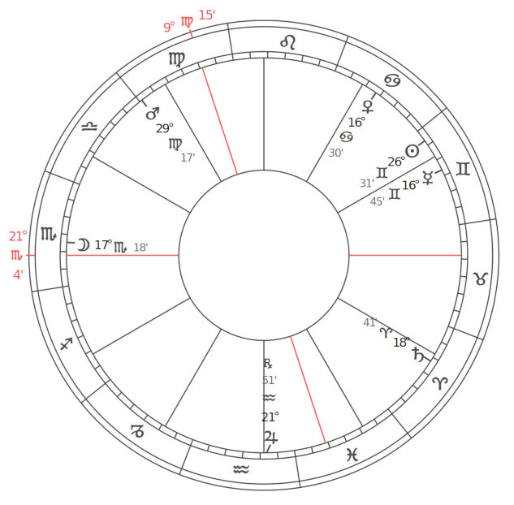
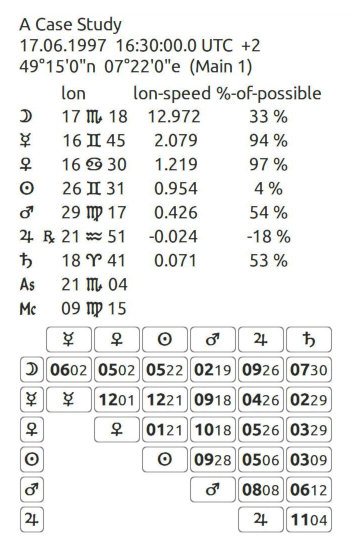

Eine Fallstudie zur hermetischen Astrologie
Ein Beispieldiagramm, das die hermetische Astrologie in all ihren Facetten zeigt.


|
Sonne im Zwilling Du liebst es zu forschen, zu suchen und zu erforschen. Sie sind besonders kommunikativ – reden, schreiben, senden ... sogar mit dem Auto. Ständig über Konventionen hinausgehend auf das Neue, Aufregende und Würzige einlassen, ist man glücklich, wenn man in der Vielfalt und Komplexität des Lebens gefangen ist. Sonne im 8. Haus Was du siehst, ist was du bekommst, ist dir nicht genug. Sie wollen mehr als nur den Schein und sind bereit, den Dingen auf den Grund zu gehen. Sie arbeiten alles Oberflächliche durch, ganz gleich, welches persönliche Opfer dafür erforderlich ist. Mond im Skorpion Ihr Leben ist leidenschaftlich. Intensive Gefühle und starke Bindungen sorgen für heiße Zeiten, und Sie sind äußerst loyal, wenn nicht sogar manchmal besitzergreifend. Verschwiegenheit, Sie sind keineswegs oberflächlich, sondern kommen immer zum Kern der Dinge. Das ist gut für Wirtschaft und Politik. Sie haben ein Gespür für Macht, Reichtum und Leidenschaft. Mond im 12. Haus Psychologie – insbesondere Gruppenarbeit – ist ein Bereich, in dem Sie immer Unterstützung und Ermutigung suchen können. Möglicherweise beraten Sie andere oder betreuen sie und helfen ihnen, Ihr Leben zu verstehen und zu akzeptieren. Merkur im Zwilling Deiner ist ein blitzschneller Witz. Du weißt irgendwie alles über jeden. Neugierig, Sie lieben es, Dinge herauszufinden – zu spekulieren, zu recherchieren. Sie sind klug, aber nicht für Ihr tiefes Denken bekannt, und jede Art von Kommunikation befriedigt Sie. Sie erforschen und testen ständig. Debatten, Spiele und Rätsel machen Ihnen Freude. Schnell. Merkur im 7. Haus Sie lieben es, mit anderen Menschen zu kommunizieren und Ideen zu diskutieren. Ihre Ideen sind immer fair und unparteiisch, insbesondere wenn es um andere Menschen, die soziale Szene, geht. Sie sind geistig in Bestform, wenn Sie mit anderen kommunizieren. Venus im Krebs Auf dem Heimweg! Mit Ihnen ist die häusliche Szene ideal. Heirat, Kinder, Tiere, Gärten – das Ganze funktioniert. Sie möchten sich sicher fühlen. Auch empfindlich. Sie sind auf andere angewiesen und mögen es, umsorgt, ja sogar bemuttert zu werden. Sie lieben Musik, können emotional sein und neigen dazu, beschützerisch zu sein. Venus im 8. Haus Sie legen nicht viel Wert auf das Oberflächliche. Sie schätzen es, über die Oberfläche hinaus und zum KernSache vorzudringen. Dies könnte Sie zu einem klugen und anspruchsvollen Geschäftsmann machen. Du schätzt Leidenschaft in einer Beziehung. Mars in Jungfrau Sie haben einen angeborenen Drang zu retten, zu retten und zu konservieren und können aus dem Ohr einer Sau eine Seidenhandtasche machen. Sie wollen immer helfen und behilflich sein – voll ausgelastet sein. Sie hassen Verschwendung und sind gründlich und präzise. Im Großen und Ganzen haben Sie Verständnis und Akzeptanz, aber das kann in Kritik und Kleinlichkeit münden. Du bist vorsichtig und ein Perfektionist. Mars im 10. Haus Ihr Antrieb ist es, Dinge zu verwalten und zu kontrollieren. Der Drang, sich zu organisieren und praktisch zu sein, kommt einer kleinen Obsession gleich. Ihre Karrieremotivation ist konstant und unerbittlich. Jupiter im Wassermann. Als echter Progressiver, besonders in der Gemeinschafts- oder Gruppenarbeit, sind Sie demokratisch bis radikal – ein Idealist. Sie sind cool und unpersönlich, wenn es darum geht, fair oder gerecht zu sein, und haben ein großes Interesse an neuen Trends und dem Weltgeschehen. Sie sind zukunftsorientiert. Anwendungsorientiert. Jupiter im 3. Haus Ein geborener Forscher und Forscher, immer forschend, suchend und den Dingen bis zu Ihrem logischen Schluss folgend. Ihre Karriere wird wahrscheinlich auf diesen Eigenschaften basieren: Kommunikation, Kontakte knüpfen, Gedanken und Ideen usw. Saturn im Widder Ihre Bestimmung ist es, eine neue Identität zu formulieren. Sie fühlen sich verletzlich, weil Sie kein instinktives Ego haben, das als Puffer gegen Umweltreize dienen könnte. Daher besteht die Tendenz, entweder zu über- oder zu unterreagieren, wenn man sich behauptet, weil man nicht über ein solides Selbstbewusstsein verfügt, auf dem man sich durchsetzen kann. Ihr Ziel ist es, ein neues, stärkeres Identitätsgefühl zu entwickeln. Saturn im 5. Haus Es fällt Ihnen schwer, loszulassen, Emotionen auszudrücken und Ihre Gefühle auszudrücken, und Sie neigen dazu, vorsichtig und zurückhaltend zu sein. Es kann schwierig sein, sich kreativ zu fühlen, da Sie in diesem Bereich streng zu sich selbst sind. Bei Kindern und Tieren kann es zu Annäherungs-/Vermeidungsreaktionen kommen. Uranus im Wassermann Sie haben eine radikale Herangehensweise an Gemeinschaften und Gruppenarbeit. Fortschrittlich und mit Einblicken in die Vereinigung der Menschheit verstehen Sie die wahre Bedeutung der Demokratie. Sie wollen gleiche Rechte für alle und handeln von einem inspirierten Sinn für Idealismus, dem Drang, es wichtig zu machen. Sie sind ein großartiger Netzwerker und arbeiten stets zum Wohle aller. Uranus im 3. Haus Sie haben echte Einblicke in alles, was mit Forschung, Studium und der Welt der Ideen zu tun hat. Durch Ihren unabhängigen mentalen Ansatz zur Problemlösung und Kommunikation kommen Sie zu neuen und anderen Verbindungen. Neptun im Steinbock Das Praktische ist das Ideal. Form folgt Funktion. Sie träumen davon, die Kontrolle zu haben – der Puppenspieler. Sie interessieren sich für Traditionen und neigen dazu, würdevoll und konservativ zu sein. Sie glauben an eine geordnete Gesellschaft, die von gütigen Monarchen geführt wird – solchen, die sehen, was zu tun ist. Neptun im 2. Haus Sie sind idealistisch, wenn es um Besitz, Finanzen und die Art und Weise, wie Sie Ihren Lebensunterhalt bestreiten, geht. Ihre Reaktion auf das, was Ihnen das Leben bietet, ist immer überheblich, wenn auch nicht immer praktisch, was möglicherweise zu Enttäuschungen führt. Pluto im Schützen Sie sind leidenschaftlich auf der Suche nach Wahrheit und Essenz. Nichts Oberflächliches oder Vergängliches fesselt Ihre Aufmerksamkeit. Ihre intensive analytische Herangehensweise an das Leben dringt zum Kern der Dinge vor. Diese Direktheit macht Sie bei anderen möglicherweise nicht immer beliebt. Pluto im 1. Haus Sie sind offenherzig und aufrichtig, wahrscheinlich nicht für Ihr großes Gespür für Diplomatie oder Taktgefühl bekannt. Ihre Intensität und leidenschaftliche Einstellung zum Leben sind für alle, die Sie treffen, offensichtlich. Ihr Antrieb ist es, das Oberflächliche zu durchdringen und zum Wesentlichen vorzudringen. Nördlicher Mondknoten in Jungfrau, Südknoten in Fische. Eskapismus, Tagträumereien und Fantasien ziehen Sie an, Sie können sich in eine ideale und perfekte innere Welt zurückziehen, in der alles gut ist. Es besteht ein Konflikt zwischen Illusionen und äußerer Realität, der das Zusammenspiel zwischen dem Traum der Jungfrau von Perfektion und dem Traum der Fische vom Idealismus widerspiegelt. Eine falsche Anwendung könnte Ihre Fähigkeit beeinträchtigen, mit der realen Welt umzugehen. Alternativ hätten Sie kreative Talente aus früheren Leben mitbringen können. Nördlicher Mondknoten im 10. Haus, Südknoten im 4. Haus. Befreien Sie sich von häuslichen und elterlichen Fallen. Engagieren Sie sich in Ihrer Gemeinschaft, anstatt die ganze Zeit zu Hause zu bleiben. Entwickeln Sie eine positivere Einstellung. Nehmen Sie Kontakt zu Menschen außerhalb Ihres familiären Umfelds auf. Gehen Sie arbeiten, auch wenn es sich nur um eine Teilzeit- oder Freiwilligenarbeit handelt. Chiron im 11. Haus Auf der Suche nach passenden Idealen. Ceres im 4. Haus Ihre Rolle als Eltern ist die Grundlage Ihres Lebens. In einem universellen Zeichen kann sich dies als Mutter der Welt oder als Mutter desjenigen manifestieren, der das Haus betritt. Wenn Ceres sich in der Nähe des IC befindet, ist der Ceres-Mythos als psychologische Grundlage besonders vorherrschend – eine emotionale Verbindung mit den Themen Verlust und Rückkehr geliebter Menschen oder Ablehnung und Akzeptanz. Pallas im 3. Haus Sie suchen den praktischen Nutzen Ihres Geistes. Sie sind ewig optimistisch und sprechen gerne über Ihre Arbeit. Viele von Ihnen unterrichten oder sind im Kommunikationsbereich tätig und möchten jederzeit Menschen in ihrer Nähe haben. Sie profitieren von vielfältigen Kontakten. Juno im 8. Haus Sie leben von der Intensität der Erfahrungen in Ihren Beziehungen. Partner können sich gegenseitig ständigen Veränderungen und Transformationen aussetzen. Die wichtigsten Beziehungsinteraktionen betreffen gegenseitige Finanzen und Besitztümer sowie die Themen Vertrauen, Macht und Sexualität. Vesta im 5. Haus schlägt eine Widmung für Ihre persönlichen kreativen Ausdrucksformen vor, sei es für Ihre Kinder oder für andere künstlerische Formen. Ein Teil des Glücks im 4. Haus. Kommunikation durch Beziehungen wird die größte Erfüllung bringen. Sie streben mit großem Ernst danach, von anderen verstanden zu werden. Sprache und der Gebrauch von Wörtern sind wichtig. Sie versuchen zu verstehen, wie andere denken und sehen, wie Sie eine größere Perspektive in Ihrem eigenen Denken entwickeln. Es besteht ein ständiges Bestreben, die Wahrnehmungen zu verfeinern, und es macht großen Spaß, anderen beizubringen, dasselbe zu tun. Sie lieben es, Ideen auszutauschen – das gibt ein Gefühl von Wachstum und Sicherheit. Sie lernen zu verstehen, dass die Gesellschaft Ihre Ideen braucht und je besser Sie Ihre Ideen auf rein unpersönliche Weise ausdrücken können, desto mehr Akzeptanz werden Sie erlangen. Skorpion-Aszendent Ein Skorpion-Aszendent verleiht Ihnen einen starken Willen – Kraft, Ehrgeiz, körperliche Energie, Leidenschaft, Entschlossenheit und tiefe Emotionen. Mutig, einfallsreich, einfallsreich, selbstständig und mutig, Sie schrecken nicht vor Kontroversen oder Auseinandersetzungen zurück, wenn sie Ihnen aufgedrängt werden – und Sie entziehen sich auch nicht der Verantwortung. Sie haben starke Vorlieben und Abneigungen gegenüber Personen und Ideen und ändern Ihre Meinungen oder Lebensgewohnheiten nicht so leicht. Sie verfügen über eine große Willensstärke, und obwohl Gefühle, Emotionen und Leidenschaften Sie manchmal stark beeinflussen, verfügen Sie über große Ausdauer und Beharrlichkeit und können hart und lange arbeiten, um Ihre Ziele zu erreichen. Sie sind ein guter Kämpfer, wenn die defensive, kritische, sarkastische oder analytische Seite Ihres Wesens aktiviert ist. Manchmal können Sie gegenüber denen, die anderer Meinung sind, zu unverblümt und energisch sein, was zu unnötiger Feindschaft und Reibung führt. Sie neigen dazu, sich um Ihre Freunde zu kümmern und geben sich alle Mühe, den Bedürftigen zu helfen, auch wenn Sie gelegentlich sehr unhöflich sein können. Sie haben auch eine Veranlagung zur Eifersucht. Möglicherweise entwickeln Sie irgendwann eine Vorliebe für mystische oder okkulte Themen. Zu den Eigenschaften, die Ihrem Partner in gewissem Maße fehlen, gehören Effizienz in praktischen Angelegenheiten und Diplomatie. Spitze des 2. Hauses im Schützen Im Allgemeinen haben Sie viel Glück in Finanzangelegenheiten und wissen, wie Sie Ihr Geld vermehren können. Sie erweitern Ihre Aktivitäten durch Geld, und in der Regel stehen ausreichend finanzielle Mittel zur Verfügung, um Ihre Ziele zu erreichen. Sie unterstützen häufig religiöse und pädagogische Einrichtungen finanziell. Manchmal sind Sie Wirtschaftstheoretiker. Spitze im 3. Haus im Wassermann Sie denken fortschrittlich und bestehen darauf, dass Ideen eine praktische Funktion haben, die auf Werten basiert, die sich über die Zeit bewährt haben. Sie denken in humanitären Begriffen. Zu Brüdern, Schwestern und Nachbarn bestehen ungewöhnliche und eigenartige Beziehungen. Spitze des 4. Hauses in den Fischen Ihr Zuhause ist oft ein Rückzugsort, der der Rückschau gewidmet ist. Manchmal wird Ihr Haus von Institutionen zur Verfügung gestellt; Sie können in Pfarrhäusern, Ashrams, von Universitäten bereitgestellten Unterkünften usw. leben. Auf jeden Fall genießen Sie die Privatsphäre in Ihrem Zuhause. Spitze des 5. Hauses im Widder Sie verbrauchen viel Energie für kreative Aktivitäten. Sie entwickeln zahlreiche Konzepte. Im Bereich der Liebe und Romantik sind Sie leidenschaftlich und aggressiv. Sie mögen Sportarten, insbesondere Kampfsportarten wie Boxen, Ringen und Fußball. Sie sind in Ihren Beziehungen zu Kindern dominant, können aber gleichzeitig auch großzügig sein. Spitze des 6. Hauses im Stier Ihre Arbeit ist praktisch, aber Sie haben Spaß an Projekten, die Sie für schön und künstlerisch halten. Sie werden nur dann hart arbeiten, wenn Sie einen finanziellen Gewinn aus Ihren Bemühungen ziehen können. Ihre Gesundheit ist im Allgemeinen robust, vorausgesetzt, Sie essen nicht zu viel und werden in keiner Weise maßlos . Stier-Nachkomme Sie ziehen Ehepartner an, die Reichtum zu bieten haben. Sie gehen Partnerschaften kooperativ ein, erwarten sich aber einen praktischen Nutzen daraus. Sie geben Geld für schöne Dinge aus, die Qualität haben. Sie geben auch Geld für Ihre Partner aus und sind sehr stolz darauf, dass Sie gut aussehen. Spitze des 8. Hauses in Zwillinge Sie sind schwanger mit Ideen bezüglich gemeinsamer Finanzen. Sie sind oft mit Gedanken und Mitteilungen beschäftigt, die den Tod und die Angelegenheiten der Toten betreffen. Sie interessieren sich intellektuell für Mysterien. Spitze des 9. Hauses im Löwen Sie möchten vielleicht nicht berühmt werden, aber Ihr Unterbewusstsein und Ihre Philosophie sind irgendwie darauf ausgerichtet, ihn zu erreichen und wichtige Positionen in Ihren jeweiligen Tätigkeitsfeldern zu erreichen. Sie unternehmen lange Reisen, sei es körperlich oder geistig. Dein Blick ist immer auf ferne Ziele gerichtet. Jungfrau Midheaven Diese Platzierung weist darauf hin, dass Sie, um in Ihrer sozialen Position in der Welt erfolgreich zu sein, Wissen und Fachwissen erwerben müssen, das mit der richtigen Einstellung zur Arbeit, zu Arbeitgebern, Arbeitnehmern und Kollegen verbunden ist. Die Lebenserfahrung wird Sie dazu zwingen, wertvolle Lektionen im Zusammenhang mit der Entwicklung eines gesunden Geschäftssinns und einer gut strukturierten, genauen, präzisen, praktischen und effizienten Arbeitsweise zu lernen. Sie interessieren sich intensiv für Geld und es ist Ihr Hauptanliegen, egal, in welchem Bereich Sie sich für Ihr Lebenswerk entscheiden. Ihr Beruf könnte in der Naturwissenschaft, im Ingenieurwesen oder in anderen Bereichen angesiedelt sein, die detaillierte Fähigkeiten und Präzision erfordern. Jungfrau ist das Zeichen des Dienstes, und viele Menschen mit dieser Stellung sind im Arztberuf oder in anderen gesundheitsbezogenen Berufen anzutreffen. Spitze des 11. Hauses in der Waage Sie erreichen Ihre Ziele oft, indem Sie sich mit ungewöhnlichen, attraktiven, künstlerischen und liebenswürdigen Freunden umgeben, die stabil und wohlhabend sind. Sie werden wahrscheinlich einen Freund, den Freund Ihres Partners oder einen langjährigen Freund heiraten. Spitze des 12. Hauses im Skorpion Ihre verborgene Unterstützung ist Ihr Einfallsreichtum. Sie sind in der Lage, Dinge als wertvoll wahrzunehmen, die andere übersehen haben. Sie wissen auch, wie Sie verborgene Talente in anderen fördern können. Ihr Untergang kann durch geheime Ressentiments und verdeckte Liebesbeziehungen verursacht werden. Sonne Quadrat Mars Sie drängen hart, aber es wird viel Energie verschwendet, weil es Ihnen an Orientierung und Planung mangelt. Sie arbeiten oft gegen den Stand der Dinge: Autoritäten oder den Status quo. Es kann für Sie schwierig sein, Ihre Ambitionen mit Ihren tatsächlichen Handlungen und Gefühlen in Einklang zu bringen. Sie neigen dazu, sich emotional zu behindern. Ihr Tatendrang und Ihre Leidenschaften bringen Sie immer wieder in Konflikt mit Autoritätspersonen. Diese Tendenz zu Zusammenstößen und emotionaler Konfrontation besteht tatsächlich, und in diesen Zeiten können Sie Ihr eigener schlimmster Feind sein. Mond Trigon Venus Sie haben eine natürliche Wertschätzung für die Vergangenheit, sowohl die persönliche als auch die Weltgeschichte – alles, was traditionell ist. Es fällt Ihnen leicht, mit Musik, Farben, Stoffen und Kunst zu arbeiten – mit allem, was schön und genial ist. Sie wären ein hervorragender Dekorateur von Häusern und generell allen Arten von Umgebungen. Sie genießen Stimmungen und Emotionen (was auch immer psychologisch ist), insbesondere in einer Gruppe. Unter Ihrem Dach sind immer jüngere Menschen, Hilflose und Bedürftige zu finden. Mond Quadrat Jupiter Der Weg oder die Karriere, die Sie einschlagen, kann gegen die Tradition verstoßen und daher manchmal einsam sein. Erwarten Sie nicht viel Unterstützung von Ihren Mitmenschen. Es besteht auch die Gefahr, dass Sie sich überfordern und Entscheidungen treffen, die Ihren eigenen besseren Gefühlen und Instinkten zuwiderlaufen. Berufswahl könnte auf Kosten von Zuhause und Umgebung gehen. Ihre Herangehensweise an die Lösung von Problemen kann dazu führen, dass Sie mit anderen in Konflikt geraten, was zu häufigen Debatten, wenn nicht sogar zu regelrechten Auseinandersetzungen führt. Merkur Halbsextil Venus Schöne Worte und ein Gespür für Beschreibungen – das Künstlerische in all seinen vielfältigen Formen. Ein inneres Gefühl von Wärme und Güte und die Fähigkeit, dies auszudrücken. Freundlich und unkompliziert. Perfekter Geschmack in literarischen und künstlerischen Angelegenheiten. Harmonisch. Merkur Sextil Saturn Ein echter Problemlöser je langweiliger, desto besser. Kann jedes Thema auf das Wesentliche reduzieren. Schwerer Denker. Könnte sehr ernst oder philosophisch sein. Viel Spaß beim Lernen und Nachdenken. Sehr methodischer und praktischer Ansatz. Venus Quadrat Saturn Es fällt Ihnen schwer, Verantwortung zu übernehmen. Du magst sie nicht. Sie möchten sich lieber auf Kosten Ihrer Verpflichtungen amüsieren und diese nach Belieben anhäufen. Dieser Kampf mit Autorität und einfachen Pflichten führt zu großer Spannung und weniger guten Zeiten. Es ist schwer, Spaß zu haben, wenn man seine Verantwortung ignoriert. Was wir hier haben, ist eine Pattsituation. Mars Trigon Neptun Sie haben die Fähigkeit, mit Ihrer Vorstellungskraft zu arbeiten und über das Alltägliche hinaus das Potenzial dahinter zu erreichen. Ihre Begeisterung für mystische und religiöse Erfahrungen macht Sie zu einem hervorragenden Lehrer in künstlerischen und kreativen Fragen. Ihr Gefühl für die Einheit hinter den spirituellen und psychologischen Dingen ist klar und wird von Ihren Mitmenschen gespürt. Sie sind zweifellos ein Romantiker, der in der Welt der Träume und Bilder zu Hause ist. In diesen Bereichen arbeiten Sie gern. Jupiter Sextil Saturn Sie besitzen die Vision eines Architekten dafür, was getan werden muss und wie man es richtig macht, damit es lange hält – ein Experte oder ein echter Baumeister. Wissen, welches Werkzeug Sie verwenden müssen und wie und wann Sie es verwenden. Ein Gefühl für den richtigen Weg oder Dharma. Bei Ihnen sind Mittel und Zweck identisch. Saturn-Sesquiquadrat-Pluto- Machtkämpfe können auftreten, insbesondere zwischen Ihrem Verantwortungsbewusstsein und dem Drang, sich völlig zu verändern. Ihr geordneteres Selbst neigt dazu, Anzeichen von Veränderungen zu ignorieren, bis sie sich in großen Umwälzungen entfalten. Ein fortlaufender Zyklus. |
About
Hi, my name is Rod Schneider and I have created this website to illustrate how, with the help of astrology, that negativity can be converted into something more positive. The astrology being shown here is rooted in the most ancient inceptions derived from Hermetism. It is technical but in the hands of a practitioner already familiar with astrology has great potential to be helpful. There is also much help for non-astrologers to use astrology in a different manner, namely with cycles and phases.Comments and contributions are always welcome.
Contact: rodschneider35@gmail.com